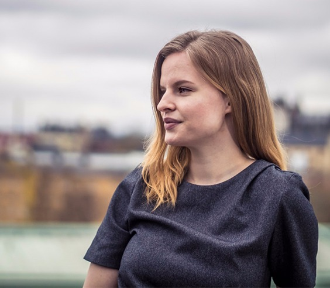
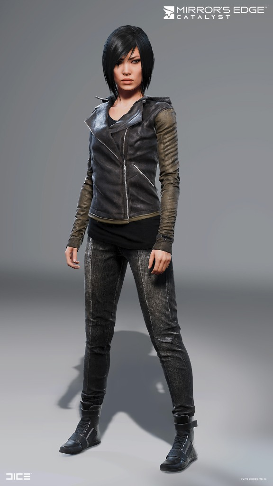
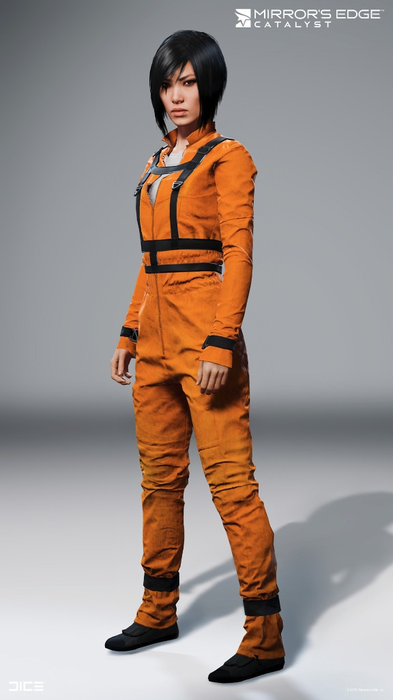
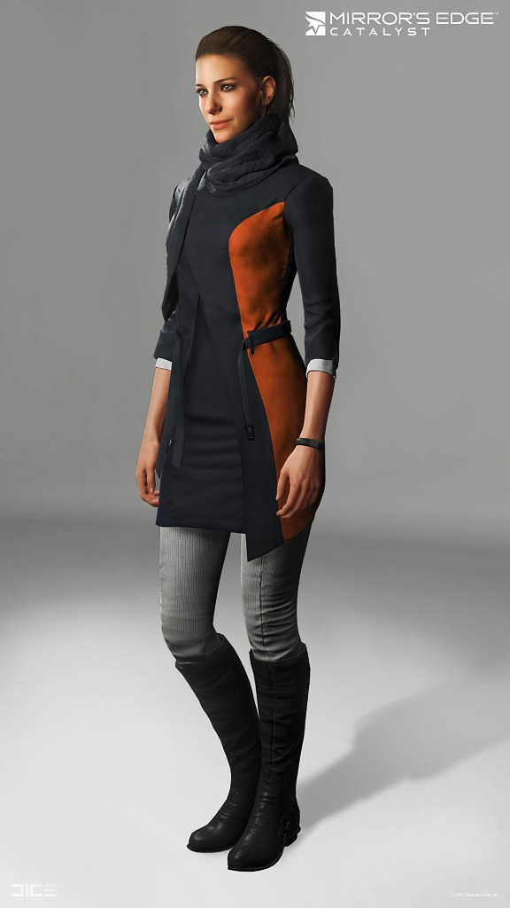
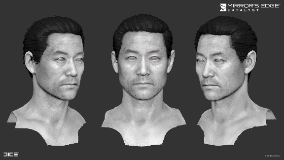
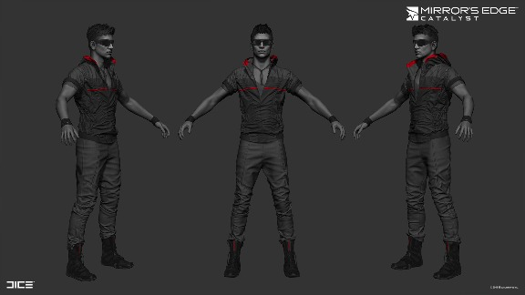
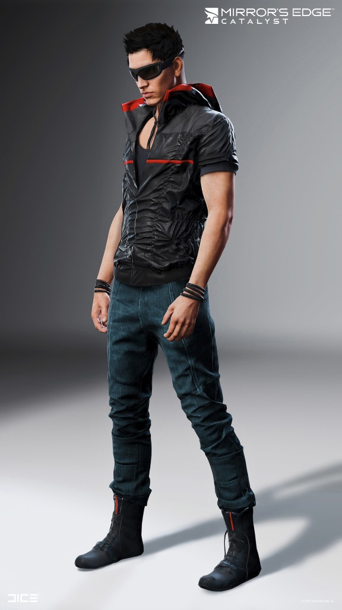
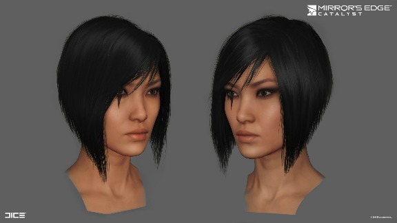
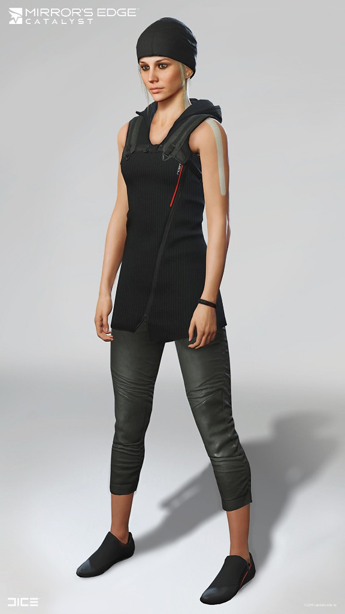
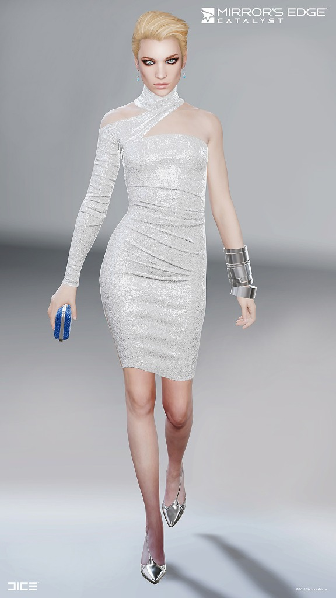

Mirror’s Edge Catalyst by Sanna Nivhede | #101

Sanna Nivhede is a Character Artist at DICE Stockholm, she had originally started out at DICE as an intern and after around 8 months she had joined the team as a full member of DICE and the Character Art team. Recently she had been working on Mirror’s Edge Catalyst characters.
She has been using tools such as Marmoset Toolbag, Marvelous Designer and zBrush to create some of the clothing and characters shown within the work below.
If you’d like to see more Mirror’s Edge Catalyst art get in touch with us and we’ll sort that out!
Don’t forget to check out Sanna’s portfolio too by clicking here.
Mirror’s Edge Catalyst Character Art by Sanna Nivhede
- 
- This is the outfit Faith wears in the prologue and the player model used in the first segment of the game. It was so much fun working on the player model and a fun challenge to make it look good both for cinematic and first person movement.Faith’s head was made by Linus Hamilton Based on concepts by Per Haagensen Rigged by Arvid Burström
- 
- This is the uniform that Faith wears in the opening cutscene of the game. I used and reshaped this model for NPC variations.Faith’s head was made by Linus Hamilton Based on concepts by Per Haagensen Rigged by Arvid Burström and Francesco Coan
- 
- Aline was one of the first characters I made on the project. This was before Marvelous Designer so her clothes are hand sculpted. The head is based on a scan and reworked to fit the character and art direction.The hair is based on a model by Rui Mu and reworked by me Based on concepts by Per Haagensen Rigged by Arvid Burström
-

- Dogen is one of my favorite personalities in the game so I am very happy that I got to work on him. I made his head in Zbrush, hair in Maya.

- 
- Based on concepts/moodboards by Per Haagensen
- 
- A runner guy I made for Mirror’s Edge Catalyst. This guy was so much fun to create. I made the clothes using Marvelous Designer and Zbrush and retopologized using Maya’s modeling toolkit. You’ll probably find him wallrunning in the city.
- 
- The head and hair was made by Linus Hamilton Based on concepts by Per Haagensen Rigged by Arvid Burström
- 
- I made several iterations of Faith’s hair for Mirror’s Edge Catalyst using Maya. Faith’s head was made by Linus Hamilton Based on concepts by Per Haagensen Credit for the hair shader goes to Rob Krajcarski, Francis Lacuna, Parrish Ley, and Kevin Ng It was implemented on our project by our own render wizard Yasin Uludag
- 
- A runner girl I made for Mirror’s Edge Catalyst. I made the clothes using Marvelous Designer and Zbrush and retopologized using Maya’s modeling toolkit. You can find her in the City of Glass sparring with her fellow runners. Based on concepts by Per Haagensen Rigged by Arvid Burström
- 
- Beatrix has been one of my favorite characters to work on! I first made a hand sculpted version of the dress but later remade it using Marvelous Designer and Zbrush. Maya for retopology and modeling the jewelry. The head and hair was made by Rui Mu Based on concepts by Per Haagensen Rigged by Arvid Burström
Likes(0)Dislikes(0)